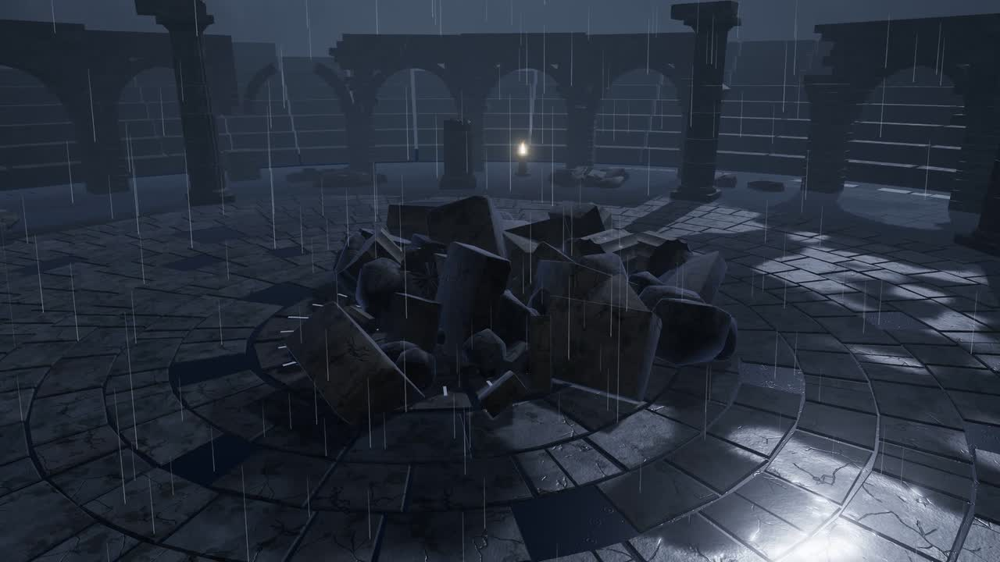
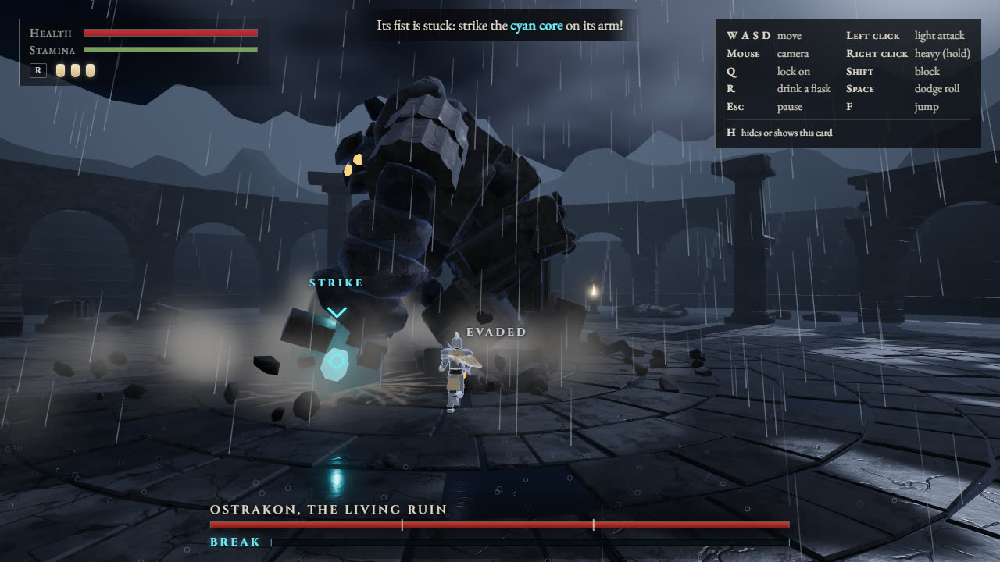
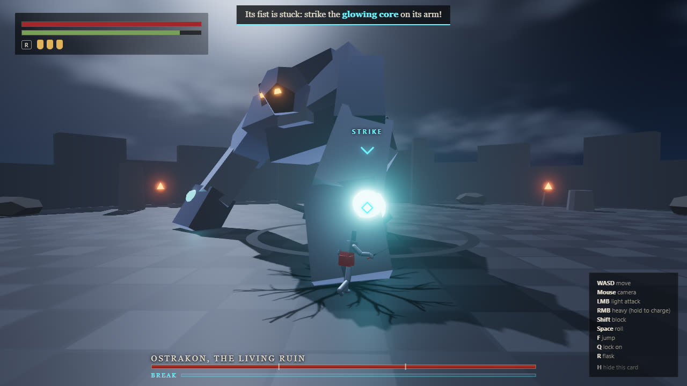
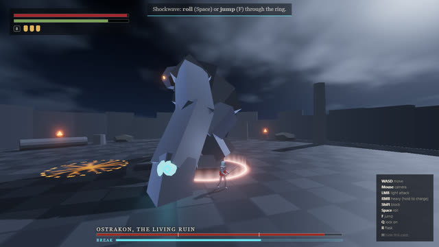
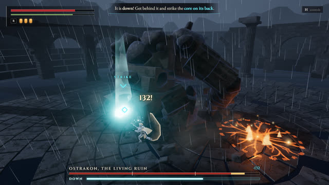
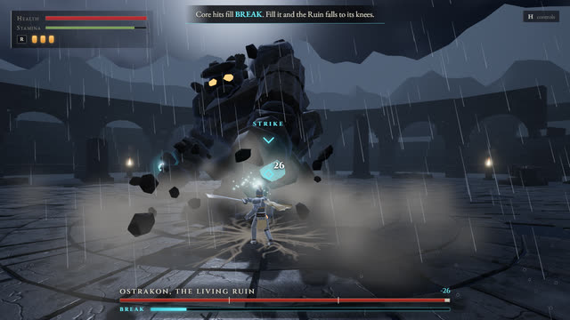
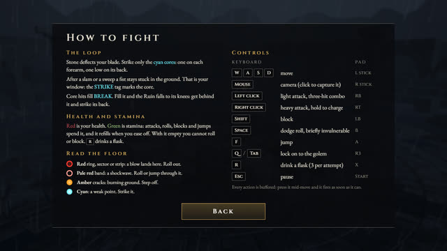
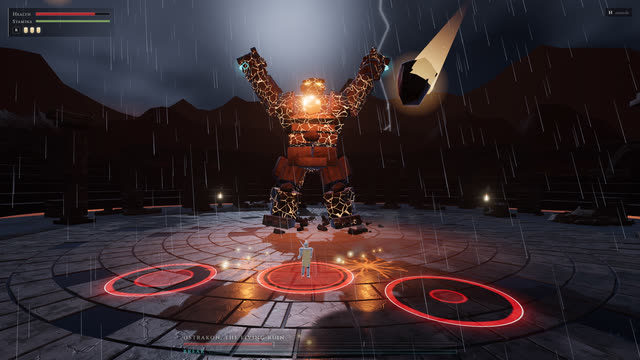

-
Stone deflects your blade
Swing at its legs and the sword skips off in a spray of sparks. The golem is stone almost everywhere, and the game teaches this in the first seconds.
-
When a fist comes down, strike
A slam leaves its fist stuck in the flagstones for a moment. The cyan core on the forearm is in reach, and a STRIKE tag marks it. Hit it, then get clear before the fist tears free.
-
Read the floor
Every blow is drawn on the ground first. A red ring or sector: move. A pale red band: a shockwave, so roll or jump through it. A roll timed well makes you untouchable for a moment.
-
Break it
Core hits fill the BREAK meter. Fill it and the Ruin falls to its knees. For a few seconds every blow counts, and the core on its back takes critical damage.
-
The cracks wake
At two thirds of its health it roars and splits with glowing cracks. It gets faster and learns a two-fisted slam, a volley of rocks and a sweeping combo.
-
Fissures
The double slam sends a fissure tearing across the arena toward you. The line glows red before it erupts: step off it.
-
The molten heart
At a third, its chest bursts open on a white-hot heart and lava light floods the joints of the floor. The heart can be struck, but only while the golem is down.
-
It calls the sky down
A roar, then burning rubble falls across the arena. Each landing point is ringed on the floor before the rock arrives. It also leaps, and you can see the landing coming from the top of the arc.
-
Ruin silenced
Bring it to nothing and it buckles, its fire goes out and the stones fall back into rubble. Then the tally: your time, your attempts, your core strikes and how often you broke it.

A drowned arena at night. Rain on the flagstones, and a heap of rubble in the middle.
Then the stones begin to move.
Ostrakon, the Living Ruin: more than eight times your height, and only one kind of place to hurt it.
Free, no install. A desktop browser with a mouse and keyboard or a gamepad.
Stone deflects your blade. Only the glowing cyan cores can be harmed.
There is one on each forearm and one low on its back. The arm cores come within reach when a fist is buried in the floor after a slam or a sweep. The back core only when it falls to its knees.
Every attack it makes is drawn on the ground before it lands. You will die, and you will know why.
How the fight goes
One boss and three phases. Each clip is the finished game, recorded one frame at a time while a test bot played it. The time beside each one is where it falls in the whole fight further down.
Watch a whole fight
The same test bot from the first step to the last, uncut. Its health never drops below 40%, so it always makes it to the end. It cannot lose. You can.
And when it wins
The death screen says what killed you and how to beat it next time. Try again puts you straight back in the fight, with a short reassembly instead of the whole intro.
A player who learns the tells should win within three to six attempts.
From grey boxes to the finished fight
The game was built in five milestones. After each one a script played it and took screenshots at the same moments, so the stages line up. Drag the line to compare.


Greybox, milestone 1 FinishedControls
Click the game to capture the mouse. Every action is buffered: press it mid-move and it fires as soon as it can.
| Keyboard and mouse | Action | Gamepad |
|---|---|---|
| WASD | Move | Left stick |
| Mouse | Camera | Right stick |
| Left click | Light attack, a three-hit combo | RB |
| Right click | Heavy attack, hold to charge | RT |
| Shift | Block | LB |
| Space | Dodge roll, briefly untouchable | B |
| F | Jump | A |
| QorTab | Lock on to the golem | R3 |
| R | Drink a flask, three per attempt | X |
| Esc | Pause and settings | Start |
Read the floor
- Red ring, sector or strip. A blow lands here. Get out.
- Pale red band. A shockwave. Roll or jump through it.
- Amber cracks. Burning ground. Step off.
- Cyan. A core. Strike it.
Health is red, stamina green. Attacks, rolls, blocks and jumps spend stamina, and with none left you cannot roll or block.
How it was made
COLOSSUS was built by Claude (Opus 5.5) from a single prompt, the fourth game in a series of one-shot builds. Nothing was downloaded: every model is a Python script run in Blender, every texture is baked or drawn in a shader, and every sound, the music included, is synthesized in the browser while you play.
-

1Greybox
The whole fight in primitive shapes: every attack, all three phases, winning and losing.
16 critic rounds
-

2Models
Golem, warrior, arena, pillars and rubble, each built by a Blender script.
16 critic rounds
-

3Feel
Animation, camera, hit feedback, rain, lightning, dust, sound and music.
12 critic rounds
-

4Interface
Title, How to fight, the HUD, pause, death and victory screens.
5 critic rounds
-

5Polish
A steady 60 fps, final balance, zero console errors.
Final checks
The critic loop
After every milestone a script played the game with scripted input and saved screenshots from the player's camera. A separate reviewer, which saw only those screenshots and a one-paragraph pitch and never the code, listed the five worst problems a player would notice. They were fixed and the loop ran again, until the worst problem left was a minor one.
- Engine
- Three.js on WebGL2 with TypeScript and Vite: soft shadows, bloom and a graded image, and a quality governor that holds 60 fps
- Models
- Six Blender scripts, one per asset family, about 2 MB of compressed glTF in all
- Sound
- Web Audio synthesis: impacts, stone, rain and thunder, and a layered score that changes with each phase
- Balance
- One tuning file. A test bot of decent skill wins about three attempts in ten